Un proyecto pionero que combina ciencia, colaboración privada, comunidad y pasión por el océano para recuperar los arrecifes coralinos de Costa Rica.
Únete a la aventura
El 87% de los arrecifes coralinos en Costa Rica están gravemente amenazados por actividades humanas y el cambio climático. Esta alarmante cifra refleja una realidad crítica que requiere acción inmediata.
En Isla Tortuga, los corales se están degradando aceleradamente. Esta degradación pone en riesgo la biodiversidad marina y el sustento económico de las comunidades costeras que dependen del turismo.
Respuestas innovadoras
Control constante de pH, temperatura y oxigenación para optimizar viveros coralinos con precisión milimétrica.
Formación integral de pobladores locales para que participen activamente en conservación y mantenimiento de arrecifes.
Ajuste de técnicas según condiciones cambiantes del océano y aprendizajes del proyecto.
Voces del Proyecto
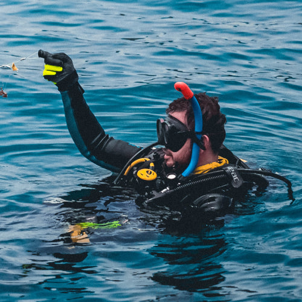
"Este proyecto no solo restaura corales, sino que transforma Isla Tortuga en un modelo inspirador de turismo sostenible para toda Centroamérica y el Caribe."
"La investigación científica nos permite multiplicar corales exitosamente y preservar especies clave para el ecosistema marino y la economía local de manera sostenible."
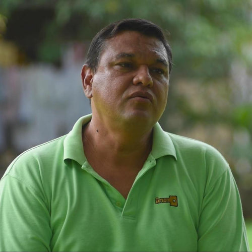
"La participación activa de Bay Island ha sido fundamental. Sin el apoyo, los recursos y la infraestructura que proporciona una colaboración público-privada, jamás hubiéramos llegado tan lejos."
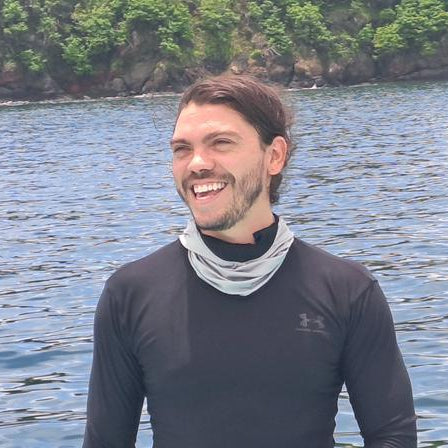
"La restauración coralina, articulada desde la investigación y la extensión, se convierte en una herramienta de transformación social que conecta comunidad, conservación y desarrollo sostenible."
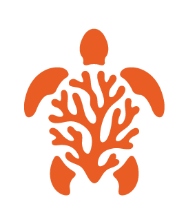
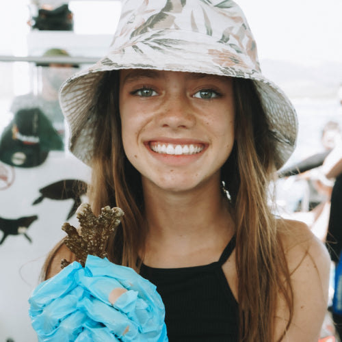
"Fue la primera vez que vi un coral de cerca y ¡me encantó! Me sentí como una exploradora, aprendí un montón sobre los peces, la vida marina y los problemas a los que se enfrentan nuestros Océanos."
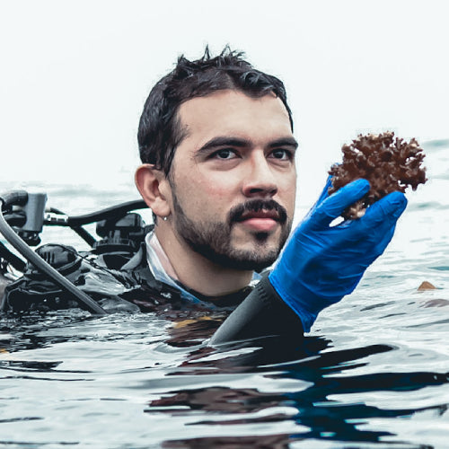
"Nunca imaginé que pudiera sembrar mi propio coral en el océano. Fue increíble aprender cómo funcionan los arrecifes y sentir que estaba haciendo algo real por el mar que tanto amo. Es una experiencia que te conecta con la naturaleza y con tu papel en cuidarla."
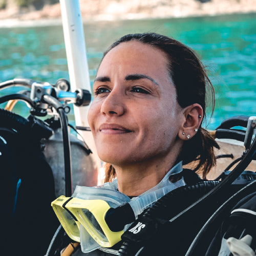
"Siempre soñé con conocer la biodiversidad de Costa Rica, pero esta aventura superó todas mis expectativas. Sembrar un coral con mis propias manos me hizo sentir parte de algo más grande: la protección del océano. Es una experiencia transformadora que recomiendo a todo viajero que quiera dejar una huella positiva."
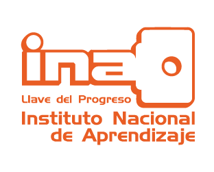
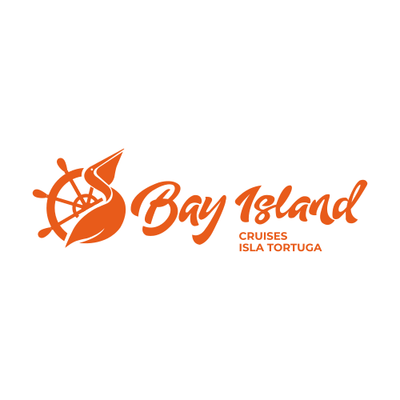